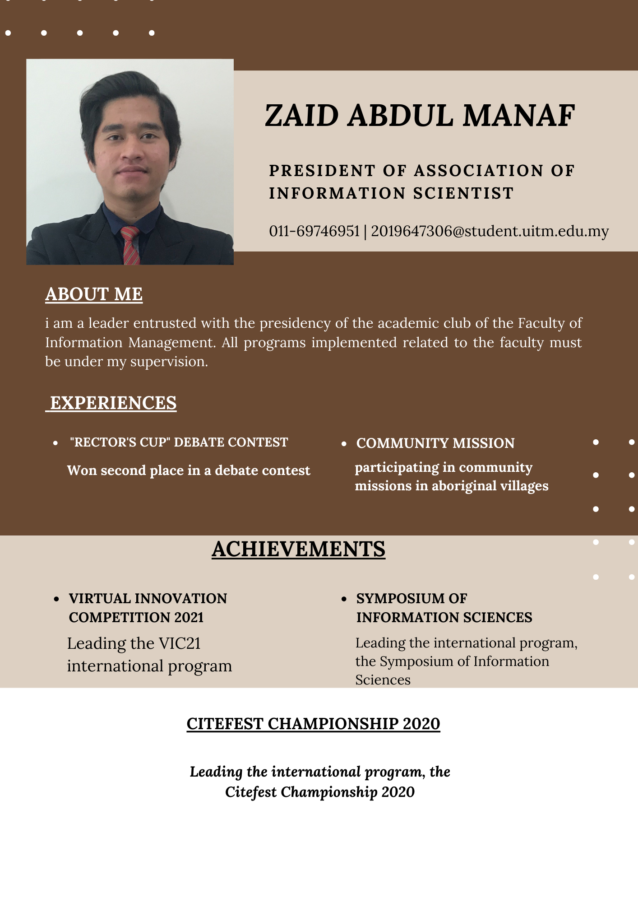

| UiTM Machang | 2019-2022 |
| Al Ihsan | 2014-2018 |
| SK Sungai Soi | 2008-2013 |
| Tadika Perpaduan | 2006-2007 |

| Presiden AIS | Appointed President to lead the Faculty of Information Management from 2020 to 2021. |
| Debate Members | Competed to represent faculty in the Rector’s Cup Debate and won second place. |
| Leading international programs | Became the Project Director of the Symposium Program and VIC21. |
| Academic outdoor clubs | Carrying out community activities in the Orang Asli Village in JeliCarrying out community activities in the Orang Asli Village in Jeli |